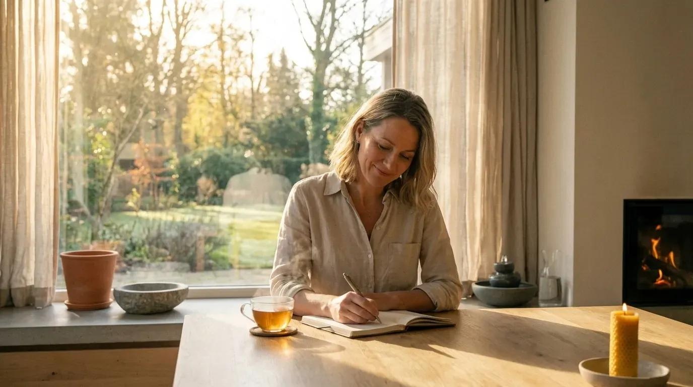
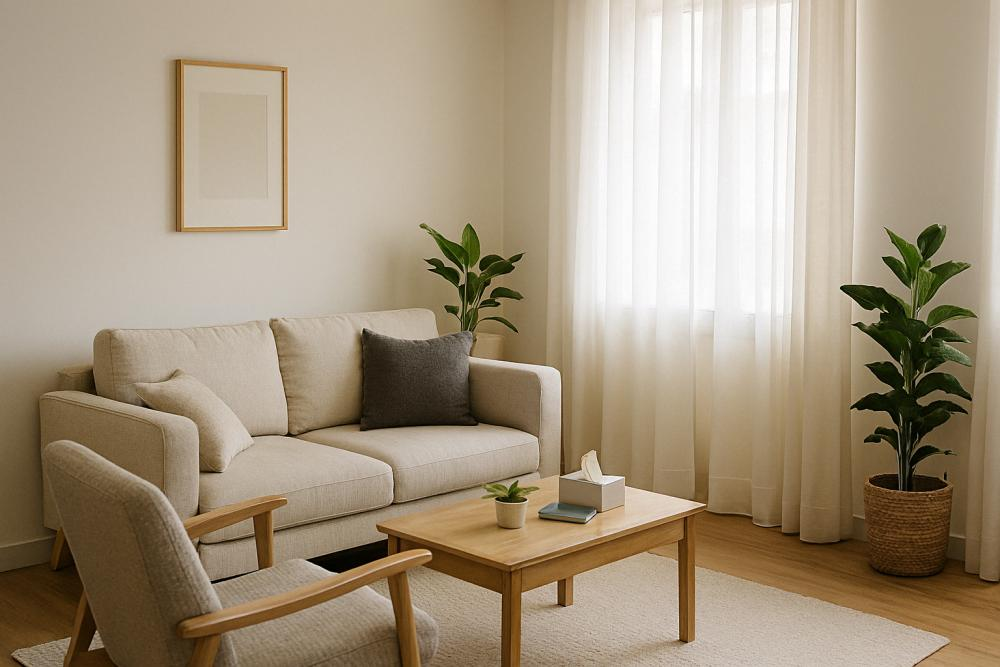
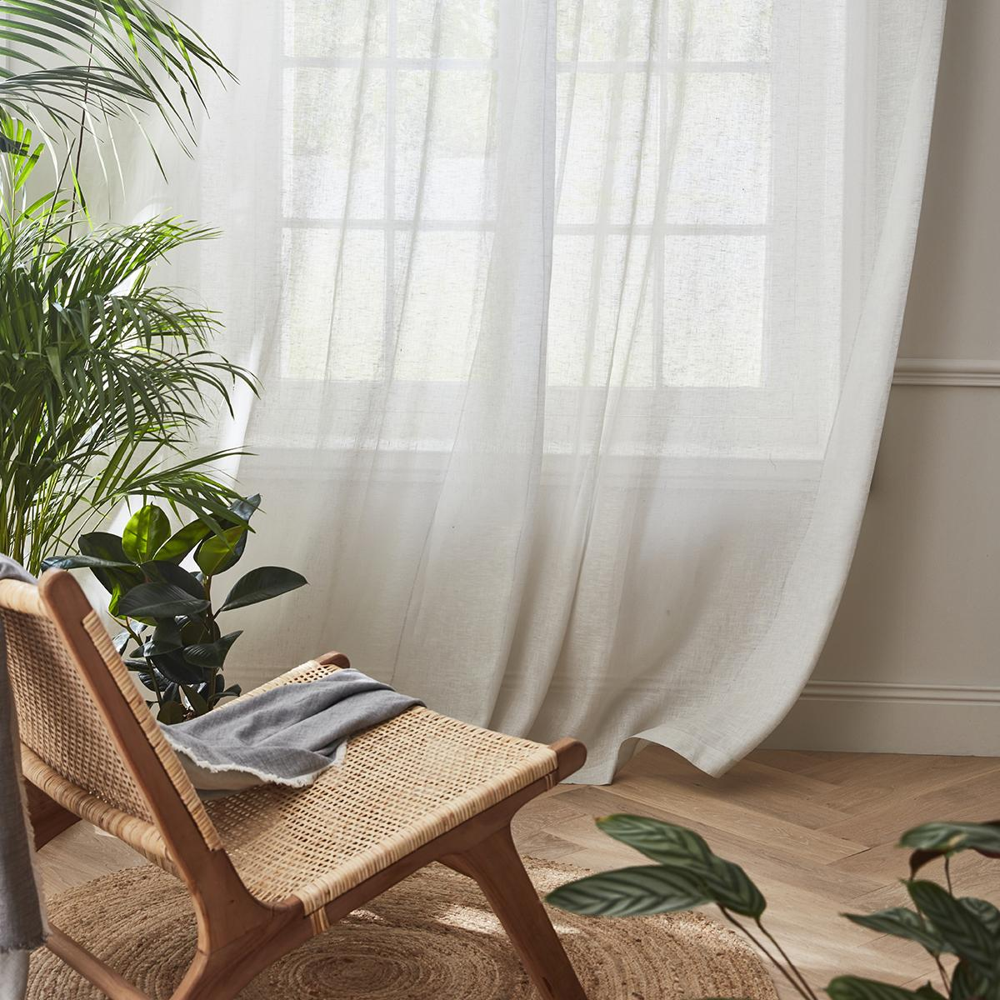

01
Anxiété et stress
Mettre des mots sur ses inquiétudes, comprendre ses émotions et explorer de nouvelles ressources.
PSYCHOLOGUE CLINICIENNE À MONS
Un espace d'écoute et de confiance pour accueillir vos émotions, comprendre vos difficultés et avancer à votre rythme.
Prendre rendez-vous →📍 Mons · Belgique

QUI SUIS-JE ?
Je suis Dilara Dibek psychologue clinicienne à Mons.
Je vous accueille dans un cadre bienveillant, confidentiel et respectueux de votre singularité. Chaque personne possède son histoire, ses ressources et son propre cheminement.
Mon approche repose sur l'écoute, le dialogue et la construction d'un accompagnement adapté à vos besoins.
Me contacter →
LA CO-THERAPIE AVEC LOKI
Loki peut, lorsque vous le souhaitez et lorsque cela est adapté au travail thérapeutique, être présent à vos côtés durant les séances;
La présence d’un chien dans un contexte thérapeutique peut constituer un support complémentaire au travail psychologique. Les recherches sur les interventions assistées par le chien suggèrent notamment des effets intéressants sur le stress et l’anxiété, l’engagement dans la relation thérapeutique, les interactions sociales et certains aspects du bien-être. Des études explorent également son intérêt auprès de personnes ayant vécu des expériences traumatiques.
Et surtout, Loki n’est jamais une obligation. Si vous préférez une séance sans lui, il restera tranquillement à la maison.
Me contacter →COMMENT PUIS-JE VOUS ACCOMPAGNER ?
Les raisons de consulter sont personnelles et peuvent évoluer au fil du temps.
Mettre des mots sur ses inquiétudes, comprendre ses émotions et explorer de nouvelles ressources.
Explorer son rapport à soi-même, ses difficultés personnelles et renforcer la connaissance de soi.
Être accompagné lors d'un changement de vie, d'une séparation ou d'une période de questionnement.
Accueillir et mieux comprendre ses émotions dans un espace d'écoute et de dialogue.
UNE APPROCHE HUMAINE
Il n'existe pas de parcours identique. L'accompagnement se construit ensemble, dans le respect de votre histoire.
INFORMATIONS PRATIQUES
La première séance permet de faire connaissance, de découvrir ce qui vous amène et de définir ensemble vos attentes.
Il n'est pas nécessaire de préparer votre venue. Vous pouvez simplement venir comme vous êtes et prendre le temps de mettre des mots sur ce que vous traversez.
À préciser selon les modalités de consultation.
Cabinet l'Envol de Soi situé Avenue d'Hyon, 107 à 7000 Mons, Belgique.
Sur rendez-vous uniquement.
UN LIEU POUR VOUS ACCUEILLIR
Un environnement chaleureux et apaisant, pensé pour vous accueillir dans les meilleures conditions.




PREMIER CONTACT
Vous souhaitez obtenir des informations ou prendre rendez-vous ? Je vous invite à me contacter.
Prendre contact →Centre L'Envol de Soi
Avenue d'Hyon 107
7000 Mons, Belgique
Sur rendez-vous uniquement